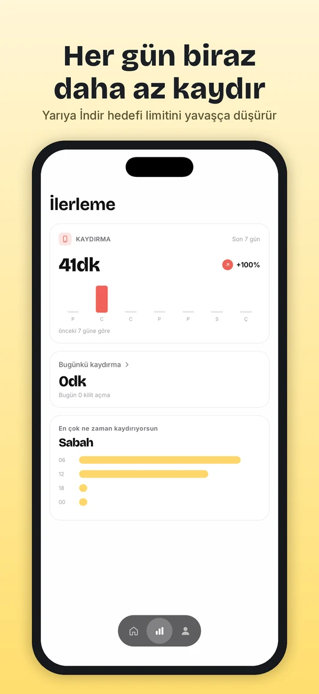
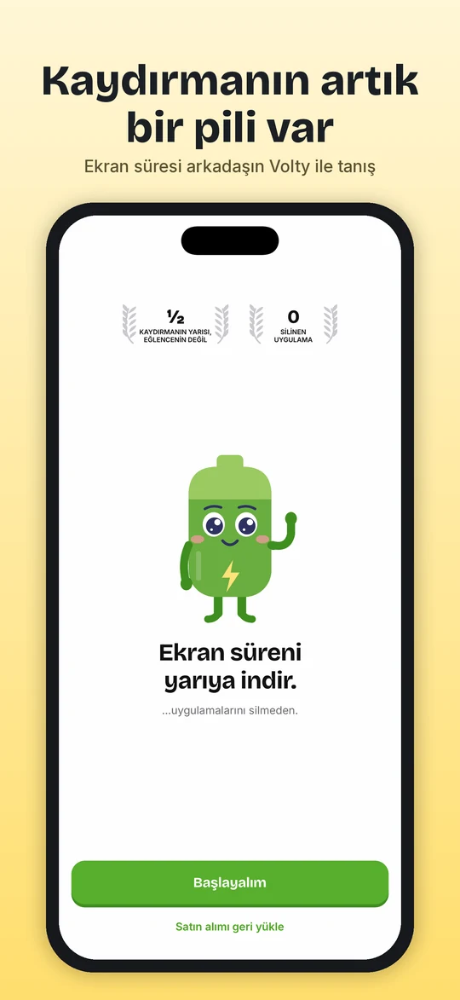

Ekran süresini yarıya indirme: adım adım plan
Ekran süreni yarıya indirmek büyük bir fedakârlık gibi görünebilir, ama bunu bir gecede yapman gerekmiyor. Her gün birkaç dakika kısarsan farkı neredeyse hissetmezsin; birkaç hafta sonra ise saatler kazanmış olursun.
Kademeli bir plan
- Ayarlar → Ekran Süresi’nden günlük ortalamana bak. Gerçek başlangıç noktan bu.
- Hedefini sıfır değil, bu sayının yarısı olarak koy.
- Sınırını bir anda değil, her gün 5 ila 15 dakika düşür.
- Keyif aldığın şeyleri koru, önce amaçsız kaydırmayı kes; örneğin yatmadan hemen önce ya da uyanır uyanmaz yapılanı.
- Tek bir kötü güne değil, haftalık eğilime bak.
ScrollVolt’ta Yarıya İndir Hedefi
Hesabı ScrollVolt senin yerine yapar. Hızı sen seçersin (günde 5, 10 ya da 15 dakika), uygulama da bugünkünün yarısı kadar kaydırana dek günlük sınırını her gün bu kadar düşürür. Bu sırada seçtiğin uygulamalar, gün içinde yeniden dolan tek bir kaydırma pilini paylaşır; pili sürükleyerek istediğin dakikanın kilidini açarsın. Adımlar küçük olduğu için değişim zor gelmez ve yarı yolda bırakma ihtimalin azalır. Odak seansları pili iki kat hızlı doldurur. İlerleme ekranında bugünkü pil grafiğini, haftalık kaydırma eğilimini ve tüm kaydırma ve odak seanslarının geçmişini görürsün. Böylece değişimi tahmin etmek yerine gözünle görürsün.


Sık sorulan sorular
Neden sıfır değil de yarı?
Sıfırı sürdürmek çoğu insan için çok zor. Yarıya indirince bolca zaman kazanırsın ve telefonunun gerçekten sevdiğin yanlarını korursun.
Ekran süresini yarıya indirmek ne kadar sürer?
Bugünkü kullanımına ve seçtiğin hıza bağlı. Günde iki saatten bir saate inmek, günde 5 dakikayla yaklaşık 12 gün, 15 dakikayla yaklaşık 4 gün sürer.
Sosyal medya uygulamalarını silmem gerekiyor mu?
Hayır. ScrollVolt seçtiğin uygulamaları silmeden sınırlar.
ScrollVolt’u iPhone’unda dene
ScrollVolt Premium, 3 günlük ücretsiz denemeyle başlayan yıllık bir aboneliktir ve Apple Hesabı ayarlarından dilediğin zaman iptal edebilirsin. Tek seferde ödemeyi mi tercih edersin? Ömür boyu kullanım için tek seferlik bir seçenek de var.
iPhone içinApp Store’dan indir